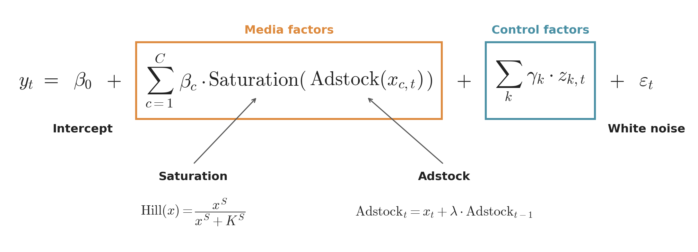
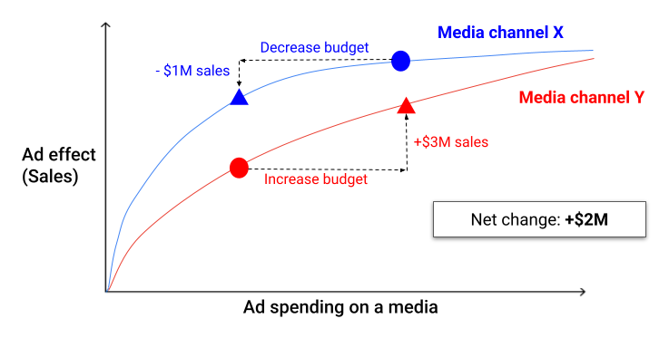
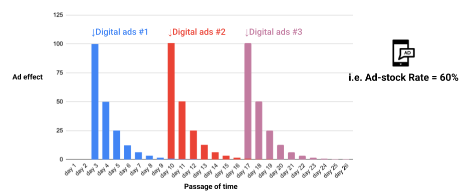
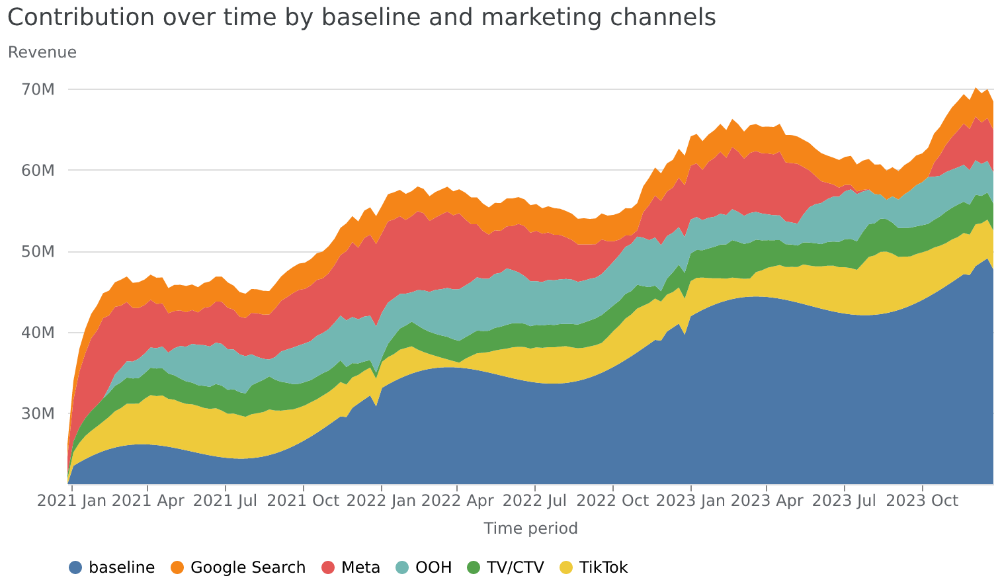
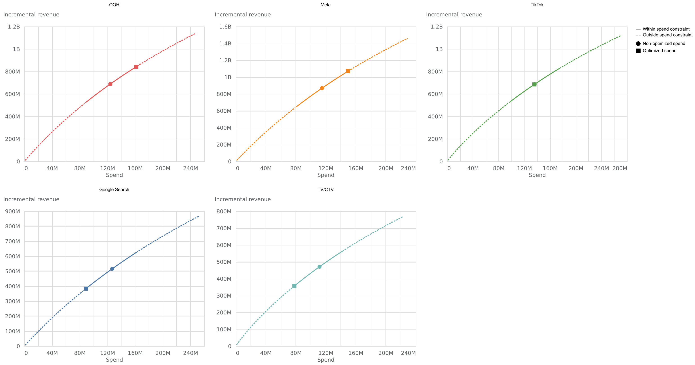

6.2 构建并优化一个 MMM
关于中文版
本页是英文版 Marketing Science in Python 的AI翻译。英文版为正式版本，如有出入，以英文版为准。代码、Notebook 和图片中的文字保持英文。 阅读英文版
什么是营销组合建模？
营销组合建模（MMM）是一种统计方法，它使用汇总的时间序列数据（通常是每周的销售额和分渠道的媒体支出）来估计每个营销渠道对业务成果的贡献。与用户级归因不同，MMM 使用汇总数据，不需要对个体进行追踪，因此在 cookie 消失、App Tracking Transparency 和封闭生态（walled garden）限制面前依然稳健。
MMM 有三个用途：
| 目的 | 业务问题示例 | |
|---|---|---|
| 1 | 衡量效率 | 去年的电视广告支出效率如何？ |
| 2 | 模拟情景 | 如果明年增减电视广告支出，销售额会怎样变化？ |
| 3 | 优化媒体预算 | 怎样分配媒体预算才能使销售额最大？ |
用户级追踪变得不那么可靠，MMM 因此重新受到关注。用汇总数据建模，是目前衡量跨渠道媒体效果最实用的方法。
MMM 方程
最简单的形式下，MMM 就是把每周销售额对媒体支出做回归，同时控制节假日、促销和其他非媒体驱动因素：

其中 \(y_t\) 是时点 \(t\) 的销售额，\(x_{c,t}\) 是渠道 \(c\) 的支出，\(z_{k,t}\) 是控制变量，\(\varepsilon_t\) 是噪声。
这个简单回归之所以不够用，有两个原因。第一，媒体效果并非立竿见影：本周的一则电视广告仍然会影响接下来几周的购买（延续效应）。第二，媒体效果并非线性：一周内的第一百个 GRP（gross rating point，毛评点，衡量电视受众触达的标准指标）带来的增量比第一个要少（收益递减）。
更贴近现实的模型会在线性组合之前先对媒体输入施加广告滞留效应（adstock，即延续效应）和饱和效应（收益递减）变换：

饱和效应（收益递减）
每个媒体渠道最终都会饱和：在一个渠道上花得越多，每多花一美元赚到的就越少。电视广告支出的第一个一百万美元会带来可观的增量销售；第十个一百万美元带来的就少得多。图 3 展示了由此形成的三个区间：投资不足区，每一美元仍在努力工作；最优区间；以及饱和区，追加支出大多被浪费。

Hill 函数是对此建模最常用的方式：
\[ \text{Hill}(x) = \frac{x^S}{x^S + K^S} \]
其中 \(K\)（半饱和点，常称为 EC50）是渠道达到其最大效果 50% 时的支出水平，\(S\)（斜率）控制曲线弯折的陡峭程度。
正是这种曲率使预算重新分配有价值。在 图 4 中，渠道 X 深处于饱和区，而渠道 Y 仍有上升空间。削减 X 的预算会损失 $1M 的销售额，而把这笔预算加到 Y 上则能获得 $3M：在总支出不变的情况下净增 $2M。把预算从饱和的渠道转移到投资不足的渠道，可以提高总回报，即使饱和渠道的平均 ROAS 看起来更高。平均 ROAS 是渠道的总增量收入除以其总支出；边际 ROAS 是渠道当前所处位置上曲线的斜率，它才是下一美元能赚到的回报。

广告滞留效应（Adstock）
广告并不会在停播的那一刻就停止起作用。广告滞留效应（Adstock）捕捉的就是这种滞后效应。最简单的形式是几何衰减（Meridian 使用相同的权重，再除以权重之和）：
\[ \text{Adstock}_t = x_t + \lambda \cdot \text{Adstock}_{t-1} \]
其中 \(\lambda \in [0, 1]\) 是保留率。\(\lambda\) 越高，延续效应持续越久。图 5 和 图 6 展示了同样三个投放波次在两种保留率下的表现。在高保留率下（典型如电视这类漏斗上层渠道），每个波次的效果在播出后仍会持续很久，重叠的波次会层层叠加。在较低保留率下（典型如数字渠道），效果在几天内就会消退。


保留率用半衰期来理解更容易，即效果衰减一半所需的期数，\(\ln(0.5) / \ln(\lambda)\)。在周粒度下，电视等漏斗上层渠道通常按数周的半衰期建模，而付费搜索等漏斗下层渠道大约一周内就会衰减。配套演示对每个渠道都采用 12 周窗口的几何广告滞留效应，并按漏斗层级设定衰减先验的中心：TV/CTV 和 OOH 为 6 周（\(\lambda \approx 0.89\)），Meta 和 TikTok 为 3 周（\(\lambda \approx 0.79\)），Google Search 为 1 周（\(\lambda = 0.5\)）。把这些视为有待数据修正的初始先验，而不是事实：公开的指导值各不相同，合适的取值取决于你的品类和数据粒度。把“按周”的保留率套用到日数据上，意味着截然不同的半衰期。
还有更灵活的替代方案。Weibull 广告滞留效应允许衰减形状非单调：效果可以在曝光后几天达到峰值再衰减，这更适合电子邮件或直邮这类天然存在处理延迟的渠道。
数据要求
MMM 需要目标变量、媒体支出和控制变量，三类数据都按周记录（表 2）。
| 变量类型 | 数据类别 | 变量 | 优先级 |
|---|---|---|---|
| 目标变量 | KPI | 销售额 | 必需 |
| 解释变量 | 媒体 | 各渠道的媒体支出 | 必需 |
| 解释变量 | 其他 | 非媒体营销指标（价格、促销、铺货） | 可选 |
| 解释变量 | 其他 | 季节性、节假日、天气、宏观经济 | 可选 |
推荐的粒度：
- 时间：按周。日数据噪声更大；月数据观测数太少。
- 历史长度：至少 2–3 年的数据（大约 104 到 156 周）。历史更短时，就难以把媒体效果与季节性分开。
- 地理：通常是全国或品牌层面。次全国（地理层面）模型可能更有效，但需要更多数据和更谨慎的建模。
- 渠道：只纳入支出确实有变化的渠道。如果一个渠道每周花同样的钱，模型就无法学到它的效果。
还有一项检查容易遗漏。广告滞留效应和饱和会平滑各渠道的贡献，因此媒体能够解释的周度销售波动可能小于模型未能解释的噪声。这时，模型无法把媒体效果和基准销售额分开，换先验也解决不了。配套笔记本在拟合前的步骤 2b 做了这项检查。
控制变量之所以重要，还有一个原因：媒体支出和销售额在构造上通常共享趋势和季节性，仅凭一个共同的日历，就足以在两条毫不相干的序列之间制造出强相关。季节性和趋势控制变量正是把这种共享结构挡在媒体系数之外的手段。
下文的示例数据就是这个结构：每周一行，记录销售额、五个渠道各自的支出和控制变量。表 3 展示了前五周的数据。
| 周 | 销售额 ($M) | TV/CTV ($k) | OOH ($k) | Google Search ($k) | Meta ($k) | TikTok ($k) | 季节性 | 圣诞节 |
|---|---|---|---|---|---|---|---|---|
| 2020-12-28 | 21.4 | 382 | 0 | 740 | 948 | 402 | -0.039 | 1 |
| 2021-01-04 | 37.3 | 836 | 0 | 768 | 1,778 | 882 | 0.069 | 0 |
| 2021-01-11 | 38.9 | 848 | 0 | 776 | 1,612 | 772 | 0.188 | 0 |
| 2021-01-18 | 41.5 | 784 | 0 | 776 | 1,619 | 851 | 0.305 | 0 |
| 2021-01-25 | 41.5 | 742 | 0 | 777 | 1,683 | 755 | 0.417 | 0 |
贝叶斯视角
现代 MMM 多采用贝叶斯方法，有三个实际原因。
- 用先验纳入业务知识。 如果以往实验表明电视广告的 ROAS 大约是 2.0，可以把这一信息纳入先验。模型再用数据更新原先的判断。没有先验时，多重共线性本身就可能让估计结果偏离合理范围。
- 给出可信区间。 除了“电视 ROAS = 2.3”，还可以报告“电视 ROAS：中位数 2.3，90% 可信区间 [1.1, 3.8]”。
- 便于纳入实验结果。 用地理实验估计某个渠道的增量效应后，可以把这项证据作为信息先验纳入 MMM。这样能收窄后验分布，提高可识别性。第 6.4 节会详细介绍做法。
这就是为什么 Meridian 和 PyMC-Marketing 这类工具在底层使用贝叶斯推断。
选择工具库
有多个开源库实现了本章的方法。以 2026 年为准，使用最广泛的三个是：
| 库 | 特性 | GitHub |
|---|---|---|
| Meridian | Google 推出的基于 Python 的贝叶斯 MMM。对地理层面数据和实验校准支持完善。已弃用的 LightweightMMM 的后继者。 | google/meridian |
| PyMC-Marketing | 基于 Python 的贝叶斯营销建模工具包。涵盖 MMM、CLV 和客户选择模型。灵活，但需要更多建模判断。 | pymc-labs/pymc-marketing |
| Robyn | Meta 推出的基于 R 的 MMM 库。使用 Ridge 回归和 Prophet。适合快速搭建基线模型。 | facebookexperimental/Robyn |
三个库都能对广告滞留效应和饱和建模，也都能辅助分配预算，但估计方法和处理不确定性的方式不同。本章选用 Meridian，因为它用 Python 实现，支持用实验校准，还提供便于查看拟合结果和预算情景的报告。
Meridian 实战讲解
配套 Notebook： sec6.2_6.4_mmm_meridian.ipynb 用 Google 的 Meridian 库演示了一个完整的 MMM 工作流程。
在 GitHub 上查看
加载和准备数据
示例包含 157 周的销售额、五个媒体渠道（TV/CTV、OOH、Google Search、Meta、TikTok）以及节假日和季节性控制变量。Meridian 用 DataFrameInputDataBuilder 从 pandas DataFrame 构建输入，并在内部完成缩放。模型对 media_cols（曝光次数、点击次数等投放量）应用饱和变换，用 media_spend_cols 计算 ROAS 的支出成本。
from meridian.data import data_frame_input_data_builder
# df: one row per week. The *_cols names are lists of its columns.
builder = data_frame_input_data_builder.DataFrameInputDataBuilder(
kpi_type="revenue", default_kpi_column="sales"
)
data = (
builder.with_kpi(df)
.with_media(
df,
media_channels=["TV/CTV", "OOH", "Google Search", "Meta", "TikTok"],
media_cols=media_cols, # exposure: saturation applies here
media_spend_cols=media_spend_cols, # dollars: the cost basis for ROAS
)
.with_controls(df, control_cols=control_cols)
.build()
)饱和与广告滞留效应的先验
Meridian 用自己的尺度表示半饱和点 \(K\)：媒体数据按中位数缩放，Adstock 权重归一化为总和等于 1，因此持续投放的渠道在该尺度上的数值接近 1。示例给所有渠道使用同一个较宽的饱和先验，倾向于曲率较小的曲线。只有广告滞留效应的先验随渠道而异。这些先验按漏斗阶段设定中心：TV/CTV 和 OOH 的半衰期为六周，Search 为一周，Meta 和 TikTok 为三周。
整套设定由一个先验对象和一个 ModelSpec 组成。
import tensorflow_probability as tfp
from meridian import constants
from meridian.model import prior_distribution, spec
tfd = tfp.distributions
prior = prior_distribution.PriorDistribution(
# ROAS: one weak prior for every channel
roi_m=tfd.LogNormal(0.2, 0.9, name=constants.ROI_M),
# Adstock centers: TV/CTV, OOH, Google Search, Meta, TikTok
alpha_m=tfd.TruncatedNormal(
[0.89, 0.89, 0.50, 0.79, 0.79], 0.1, 0.0, 1.0, name=constants.ALPHA_M
),
# Saturation: one wide prior that favors a gentle bend
ec_m=tfd.TruncatedNormal(5.0, 2.0, 0.1, 30.0, name=constants.EC_M),
)
model_spec = spec.ModelSpec(
prior=prior, media_prior_type="roi", max_lag=12,
holdout_id=holdout_id, # a random 25% of weeks, kept to check the fit
)训练模型
Meridian 使用无掉头采样器（NUTS）执行 MCMC。我们先从先验分布采样，检查结果是否合理，再从后验分布采样。
from meridian.model import model
mmm = model.Meridian(input_data=data, model_spec=model_spec)
mmm.sample_prior(500)
mmm.sample_posterior(n_chains=4, n_adapt=500, n_burnin=500, n_keep=1000)
# Production runs typically use n_chains=10, n_keep=2000 (≈ 5× compute).模型诊断
Meridian 的 ModelReviewer 自动检查收敛、基准水平、拟合优度以及先验到后验的变化，并报告通过、待复查或失败。表 5 汇总了各渠道的拟合结果。最后一列是边际 ROAS 区间的半宽除以估计值，后面用它来筛选预算建议。
| 渠道 | 支出占比 | 平均 ROAS［90% 可信区间］ | 边际 ROAS［90% 可信区间］ | 相对半宽 |
|---|---|---|---|---|
| TV/CTV | 18% | 4.21 [1.90, 6.58] | 3.18 [1.53, 4.86] | 0.52 |
| OOH | 20% | 5.54 [3.67, 7.36] | 4.34 [2.94, 5.70] | 0.32 |
| Google Search | 21% | 4.06 [0.46, 11.67] | 3.29 [0.36, 9.51] | 1.39 |
| Meta | 19% | 7.55 [5.92, 9.06] | 6.08 [4.72, 7.33] | 0.21 |
| TikTok | 22% | 5.04 [2.94, 6.83] | 3.84 [2.21, 5.27] | 0.40 |
四个渠道的区间足以用于规划。Google Search 的边际 ROAS 区间却从 0.36 到 9.51，后文会围绕这一行展开。
模型拟合
随机留出 25% 的周后，示例的样本内 R² 和样本外 R² 都约为 0.97。合成数据加随机留出属于条件较好的插值检验，两者相近在意料之中。在真实业务数据中，噪声、趋势中断和不均匀的促销会让样本外 R² 落在 0.6 到 0.7，这很常见，也可以接受。R² 高无法验证媒体效果的估计。效应的方向和大小需要单独检查。
既然第 5.3 节断然拒绝随机划分，这里为什么用随机留出？预测必须外推到训练窗口之外，所以要从一个固定的起点向前评分。而 MMM 是在它已观测到的时期内为销售额分配功劳，所以分散的留出集问的正是有用的问题：拟合出的结构在似然从未见过的那些周上是否依然成立。把这个数字读作插值诊断，而不是模型能预测下个季度的证据。

蓝线是模型估计，绿线是实际收入，橙线是没有媒体投放时的估计基准收入。蓝色阴影表示 90% 可信区间。

第二张图沿用 Meridian 的同一份输出，只保留留出的周。拟合贴近实际值，说明模型能够在这段历史内插值。各渠道的区间则显示了媒体效果估计的精度。
渠道表现
模型给出各渠道的 ROAS 估计和可信区间。

Meridian 将收入与支出之比标为 ROI，本章把它称为 ROAS。新增的虚线标出贡献利润率为 40% 时的盈亏平衡 ROAS 2.50。Search 的区间跨过了这条线。

基准收入是 Meridian 对没有媒体投放时的收入估计。不同颜色的色带表示各渠道的估计贡献。收入轴的起点高于零，应按轴上的数值看变化，不要用可见面积判断各渠道占比。
你不必一张张地构建这些图表。只需一次调用 summarizer.Summarizer(mmm).output_model_results_summary(...)，就能生成一份可直接交给利益相关方的两页 HTML 报告，涵盖模型拟合、渠道贡献、带可信区间的 ROAS 和响应曲线。看看配套 Notebook 生成的那份：summary_output.html。
预算分配
模型的三个用途（测量、模拟、优化）在这里汇合。响应曲线拟合好之后，优化器会在固定预算约束下搜索使预测 KPI 最大化的分配方案：
from meridian.analysis import optimizer
budget_optimizer = optimizer.BudgetOptimizer(mmm)
optimization_results = budget_optimizer.optimize()这与 图 4 中的饱和逻辑相同，只是现在应用于整个媒体组合而不是两个渠道：优化器把预算转向下一美元仍能发挥最大作用的渠道。

低于零的柱表示建议削减，高于零的柱表示建议增加。TV/CTV、Search 和 TikTok 小幅削减后腾出的预算转给 OOH 和 Meta。

圆点表示当前支出，方块表示优化器建议的支出。右移是增加，左移是减少。每个位置的曲线斜率表示再花一美元能带来多少增量收入。
优化器提供了同样便捷的报告功能：optimization_results.output_optimization_summary(...) 会生成一份关于推荐重新分配方案的两页 HTML 报告（optimization_output.html）。
表 6 给出模型的建议。在总预算不变的情况下，优化器将 TV/CTV 和 Google Search 的预算转给 OOH 和 Meta，四个渠道的变化均达到允许的 30% 上限，TikTok 基本不变。模型预测媒体带来的销售额会增加约 3%，相当于总销售额的约 1.2%。
| 当前支出 | 建议支出 | 变化 | Change |
|---|---|---|---|
| OOH | $124.4M | $161.7M | +30.0% |
| Meta | $115.2M | $149.8M | +30.0% |
| TikTok | $136.1M | $135.8M | −0.2% |
| TV/CTV | $111.8M | $78.3M | −30.0% |
| Google Search | $127.1M | $89.0M | −30.0% |
如果某个渠道的区间相对半宽超过 0.8，笔记本会保持该渠道的预算不变。本例中，这个渠道是 Search。调整 Search 预算前，先做增量测试。第 6.3 节介绍实验做法，第 6.4 节把结果纳入模型。
要点
- MMM 从汇总时间序列中估计渠道贡献，因此不受 cookie 消失和封闭生态的影响。它需要周数据、两到三年的历史，以及每个渠道真实的支出变化。
- 广告滞留效应和饱和效应把支出转化为响应曲线，而这条曲线正是你应当按边际回报而非平均回报分配预算的原因。一个平均 ROAS 很高的渠道可能已经饱和。
- 对于数据无法识别的渠道，模型返回的就是你给它的先验。冻结那些区间宽到无法辩护的建议，记录模型的预测，然后去测量它。